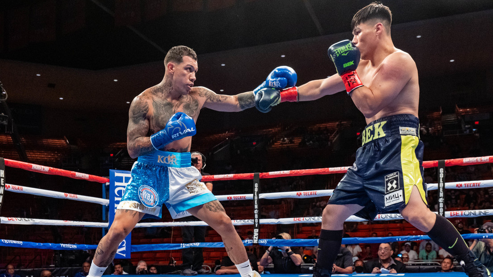

Las artes marciales son sistemas de combate y disciplinas físicas y mentales que se han desarrollado en diferentes partes del mundo a lo largo de la historia. Cada arte marcial tiene sus propias características y técnicas distintivas, pero comparten el objetivo común de mejorar el bienestar físico, mental y espiritual de quienes las practican. A continuación, se presenta un resumen general de las artes marciales más conocidas:
1. Asia Oriental: Las artes marciales más reconocidas de esta región incluyen el Kung Fu (también conocido como Wushu) de China, el Karate y el Judo de Japón, el Taekwondo de Corea del Sur y el Muay Thai de Tailandia. Cada una de estas disciplinas se enfoca en técnicas específicas, como golpes, patadas, lanzamientos y sumisiones, y a menudo se centran en aspectos filosóficos y espirituales.
2. Sudeste Asiático: En esta región, destacan el Silat de Indonesia, Malasia y Filipinas, que combina técnicas de lucha y autodefensa con elementos culturales y tradicionales. También se encuentra el Escrima, un arte marcial filipino que se centra en el combate con armas, como bastones y cuchillos.
3. India y Nepal: El Kalaripayattu es un antiguo arte marcial indio que se cree que es uno de los más antiguos del mundo. Combina movimientos de ataque y defensa, así como prácticas de curación y yoga. También se encuentra el Gatka, una forma de combate con espadas originaria de la región de Punjab, en India.
4. Medio Oriente: El Krav Maga, originario de Israel, es un sistema de defensa personal desarrollado para las fuerzas de seguridad y militares. Se basa en movimientos rápidos y técnicas prácticas para neutralizar a un oponente en situaciones de combate real.
5. África: El Nuba Fighting es un estilo de lucha de Sudán que se caracteriza por movimientos acrobáticos y rápidos. También se encuentran diversas formas de lucha tradicional en diferentes regiones del continente, como el Dambe en Nigeria y el Lutte Traditionnelle en Senegal.
Estos son solo ejemplos representativos de las artes marciales en el mundo. Cada una tiene sus propias características únicas y refleja la cultura y la historia de la región donde se originó. Además de su aspecto de combate, las artes marciales también se practican como formas de ejercicio, desarrollo personal y competitividad deportiva.
- 

El boxeo es un deporte de combate en el que dos contrincantes luchan utilizando únicamente sus puños, dentro de un cuadrilátero. El objetivo principal del boxeo es golpear al oponente mientras se esquiva sus ataques, buscando obtener puntos o un nocaut para ganar el combate.
El boxeo moderno se originó en el siglo XVIII en Inglaterra y se ha convertido en uno de los deportes de contacto más populares en todo el mundo. Los combates se dividen en rondas de duración predeterminada, generalmente de tres minutos, con descansos de un minuto entre ellas.
Los boxeadores utilizan guantes acolchados para proteger sus manos y reducir el riesgo de lesiones graves. Durante un combate, se permite golpear al oponente en la parte superior del cuerpo, incluyendo la cabeza, el torso y las áreas laterales. Sin embargo, están prohibidos los golpes bajos, golpes en la nuca, cabezazos y agarrar al oponente.
El boxeo se rige por reglas y regulaciones estrictas para garantizar la seguridad de los competidores. Los combates pueden ser amateur o profesionales, y en ambos casos se lleva a cabo una puntuación por jueces. Los puntos se otorgan según la efectividad de los golpes y la defensa de cada boxeador. Si un boxeador es incapaz de continuar el combate debido a un golpe contundente, se declara un nocaut y el combate termina.
El boxeo no solo es un deporte de alta intensidad física, sino que también exige habilidades técnicas, estrategia y resistencia. Requiere una combinación de fuerza, velocidad, agilidad y resistencia cardiovascular. Además, el boxeo es una disciplina que promueve la disciplina, el respeto y el desarrollo mental, ya que los boxeadores deben enfrentar desafíos tanto dentro como fuera del ring.

El Muay Thai, también conocido como el arte marcial tailandés o boxeo tailandés, es un deporte de combate y arte marcial originario de Tailandia. Se caracteriza por el uso combinado de puños, codos, rodillas, y patadas, lo que lo convierte en uno de los sistemas de lucha más completos y efectivos.
En el Muay Thai, los competidores utilizan golpes de puño, patadas, rodillas y codos, así como técnicas de agarre y lanzamiento. A diferencia de otros estilos de lucha, el Muay Thai permite el uso de los codos y las rodillas, lo que lo hace extremadamente versátil tanto en combate de pie como en situaciones de lucha cuerpo a cuerpo.
El entrenamiento en Muay Thai implica el desarrollo de habilidades técnicas, fuerza, resistencia y flexibilidad. Los practicantes aprenden una variedad de técnicas de ataque y defensa, así como tácticas estratégicas para enfrentar a sus oponentes. También se enfatiza el entrenamiento físico intenso, incluyendo ejercicios de acondicionamiento y sparring.
El Muay Thai es muy popular en Tailandia y se ha expandido a nivel mundial como una disciplina de combate y un deporte competitivo. Los combates de Muay Thai se llevan a cabo en un ring, siguiendo reglas específicas que permiten golpes y patadas tanto al cuerpo como a la cabeza. Los combates se disputan en varias categorías de peso y pueden ser amateur o profesionales.
Además de su aspecto competitivo, el Muay Thai se practica como una forma de entrenamiento físico, autodefensa y desarrollo personal. Promueve la disciplina, el respeto y el espíritu deportivo, y es apreciado tanto por su belleza técnica como por su eficacia como arte marcial.
El Sambo es un arte marcial y sistema de defensa personal desarrollado en la Unión Soviética en la década de 1920. Fue creado por Viktor Spiridonov y Vasili Oshchepkov, quienes se inspiraron en diferentes estilos de lucha y artes marciales de todo el mundo. El término "Sambo" es una abreviatura de "Samozashchita Bez Oruzhiya", que se traduce como "autodefensa sin armas" en ruso.
El Sambo combina técnicas de lucha cuerpo a cuerpo, lanzamientos, sumisiones y golpes. Se caracteriza por su enfoque práctico y eficiente, diseñado para permitir que un luchador neutralice rápidamente a su oponente en situaciones de combate real. El sistema incorpora elementos del judo, la lucha libre y varios estilos de lucha tradicionales rusos, lo que lo convierte en una disciplina versátil y completa.
Una de las características distintivas del Sambo es su énfasis en la adaptabilidad y la improvisación. Los practicantes aprenden a adaptarse rápidamente a diferentes escenarios y estilos de lucha, utilizando técnicas tanto en el suelo como de pie. También se pone énfasis en el desarrollo físico, la fuerza, la resistencia y la flexibilidad, ya que estas cualidades son fundamentales para tener éxito en el Sambo.
El Sambo ha ganado popularidad a nivel mundial y se ha convertido en un deporte competitivo reconocido. Se han establecido federaciones y organizaciones internacionales de Sambo que regulan las competiciones y promueven el desarrollo de este arte marcial. Además de su aspecto deportivo, el Sambo sigue siendo enseñado y utilizado como un sistema de defensa personal efectivo y práctico en diversas aplicaciones, incluyendo fuerzas militares y de seguridad.
El Taekwondo es un arte marcial y deporte de combate que se originó en Corea. Se caracteriza por su énfasis en las patadas de alta velocidad y alto impacto, aunque también incluye puñetazos, técnicas de bloqueo y movimientos de pie.
El Taekwondo se basa en principios fundamentales como el respeto, la disciplina y el autocontrol. A través de la práctica del Taekwondo, los practicantes buscan desarrollar su fuerza física, resistencia, flexibilidad y agilidad, así como mejorar su equilibrio y coordinación.
El entrenamiento en Taekwondo incluye técnicas básicas, formas o "poomsae", sparring o combate controlado, y práctica de rompimientos de tablas. Los practicantes también aprenden valores éticos y morales, y se les enseña a aplicar los principios del Taekwondo en su vida diaria.
El Taekwondo se ha convertido en un deporte olímpico reconocido en todo el mundo. En las competencias de Taekwondo, los competidores se enfrentan en combates divididos por categorías de peso y deben acumular puntos mediante patadas y puñetazos precisos y controlados.
Además de su aspecto competitivo, el Taekwondo se practica como una forma de defensa personal y como una disciplina para mejorar la condición física y la salud en general. También se valora como una herramienta para desarrollar la confianza en uno mismo, la disciplina mental y el enfoque.
En resumen, el Taekwondo es un arte marcial y deporte que combina técnicas de patadas, puñetazos y defensa personal. Se enfoca en el desarrollo físico, mental y moral de los practicantes, promoviendo valores como el respeto y la disciplina. Es apreciado tanto por su aspecto competitivo en las competencias como por sus beneficios para la salud y el desarrollo personal.